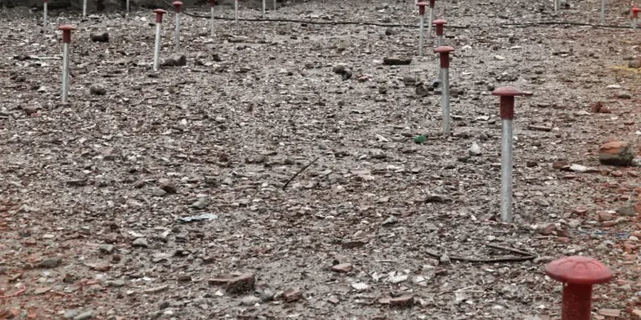

En Santiago, la estabilidad de laderas y cortes exige un conocimiento profundo de los suelos residuales de la Cordillera de la Costa y los depósitos fluvio-glaciales que caracterizan la cuenca. Las intervenciones deben ajustarse a las exigencias de la NCh 3262 para diseño sísmico y a la práctica local derivada de la Ordenanza General de Urbanismo y Construcciones. Esta categoría aborda desde la caracterización geotécnica hasta la verificación de factores de seguridad, partiendo por un riguroso análisis de estabilidad de taludes y apoyándose en soluciones como el diseño con geoceldas para control de erosión superficial en pendientes pronunciadas.
Proyectos viales en el acceso oriente, excavaciones para edificaciones en el sector nororiente y la habilitación de plataformas en condominios de ladera requieren estos estudios de manera obligatoria. La complejidad sísmica y las lluvias concentradas obligan a complementar con un evaluación de deslizamientos para identificar mecanismos de falla retrogresiva. Un correcto dimensionamiento de estructuras de contención, integrando diseño de muros de contención, es la clave para garantizar la seguridad operacional a largo plazo.

En Santiago, la variabilidad lateral de suelos aluviales puede producir asientos diferenciales de hasta 5 cm entre columnas vecinas.
Metodología y alcance
- Extracción de muestras inalteradas en calicatas y sondeos
- Edómetros para determinar módulo edométrico y coeficiente de consolidación
- Cálculo de asientos inmediatos y por consolidación secundaria
Consideraciones locales
La norma NCh433.Of2012 exige verificar asientos diferenciales en estructuras de categoría sísmica alta. En Santiago, la zona centro y sur presenta arcillas lacustres con alta compresibilidad. Si el análisis de asentamiento diferencial se omite, pueden aparecer fisuras en tabiques, desniveles en losas y fallas en sistemas de tuberías. El estudio de mecánica de suelos completo integra este análisis con la capacidad portante y la respuesta sísmica local.
¿Necesita una evaluación geotécnica?
Respuesta en menos de 24h.
WhatsApp directo: +56 9 7709 2993La forma más rápida de cotizar
Email: contacto@geotecnia1.biz
Normativa aplicable
NCh433.Of2012 — Diseño sísmico de edificios (verificación de asientos diferenciales), NCh 3221 — Ensayo de consolidación unidimensional (edómetro), NCh1508.Of2008 — Geotecnia — Clasificación de suelos y ensayos de laboratorio
Servicios técnicos asociados
Modelación numérica de asientos
Uso de software geotécnico (PLAXIS, Settle3) para predecir asientos totales y diferenciales bajo cargas de proyecto. Se calibra con datos de edómetros y SPT de la zona.
Ensayos de consolidación en laboratorio
Edómetros de deformación controlada (CRS) y convencionales para determinar Cc, Cv y módulo edométrico en muestras inalteradas de arcillas santiaguinas.
Monitoreo de asientos con topografía de precisión
Instalación de puntos de control y nivelación diferencial durante la construcción. Se comparan lecturas con valores predichos para ajustar el modelo si es necesario.
Parámetros típicos
Preguntas frecuentes
¿Qué diferencia hay entre asentamiento total y diferencial?
El asentamiento total es el hundimiento uniforme de toda la estructura; el diferencial es la diferencia de hundimiento entre dos puntos (ej: columnas). El diferencial genera esfuerzos internos que pueden agrietar elementos no estructurales y estructurales. Por eso la NCh433 exige limitarlo a valores según el tipo de edificación.
¿En qué zonas de Santiago es más crítico el asentamiento diferencial?
Las zonas con arcillas lacustres de alta compresibilidad —sectores de Maipú, Cerrillos, Pudahuel y La Pintana— presentan mayor riesgo. También es crítico en rellenos artificiales de la ribera del Mapocho y en terrenos con alternancia de gravas y limos (barrios de la comuna de Santiago centro).
¿Cuánto cuesta un análisis de asentamiento diferencial en Santiago?
El rango referencial para un estudio básico con 3 puntos de control y ensayos edométricos es entre $298.000 y $1.006.000. Varía según la cantidad de sondeos, profundidad y ensayos adicionales (SPT, CPT). Se recomienda solicitar cotización con el perfil de cargas del proyecto.
¿Qué normativa rige este análisis en Chile?
La NCh433.Of2012 establece límites de asiento diferencial según la categoría de la edificación. También se aplican las guías del Manual de Carreteras (vol. 3) para obras viales y la NCh1508 para clasificación de suelos. Los ensayos de laboratorio siguen normas ASTM (D2435, D2436).